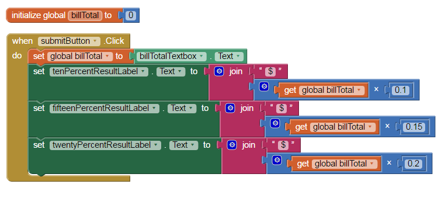

Computer Science Principles
November 8, 2016
- Click on the link to make a copy of a Google Doc: ai component usage. Fill in the three empty boxes with how you've seen the component used in other apps OR tell how you could use the component in app you have an idea for.
- If you weren't here yesterday, use this link (tipCalculator.aia) to download the file we worked on yesterday and upload it into your app inventor. If you need help, ask a neighbor or ask Mr. Lockhart.
- Use the picture below to help finish your code for our Tip Calculator.

- Add a space to also calculate a 25% tip and an 18% tip. (You'll have to add some labels to the screen as well as code.)
- BONUS: Add a space for other tip percentages (allow the user to input their own percent).
- BONUS: Have it calculate the total bill with the tax included.
- BONUS: Make it calculate how much you'll pay in total with the tip.
- BONUS: Round the tip amounts to the nearest hundredths (two places after decimal).